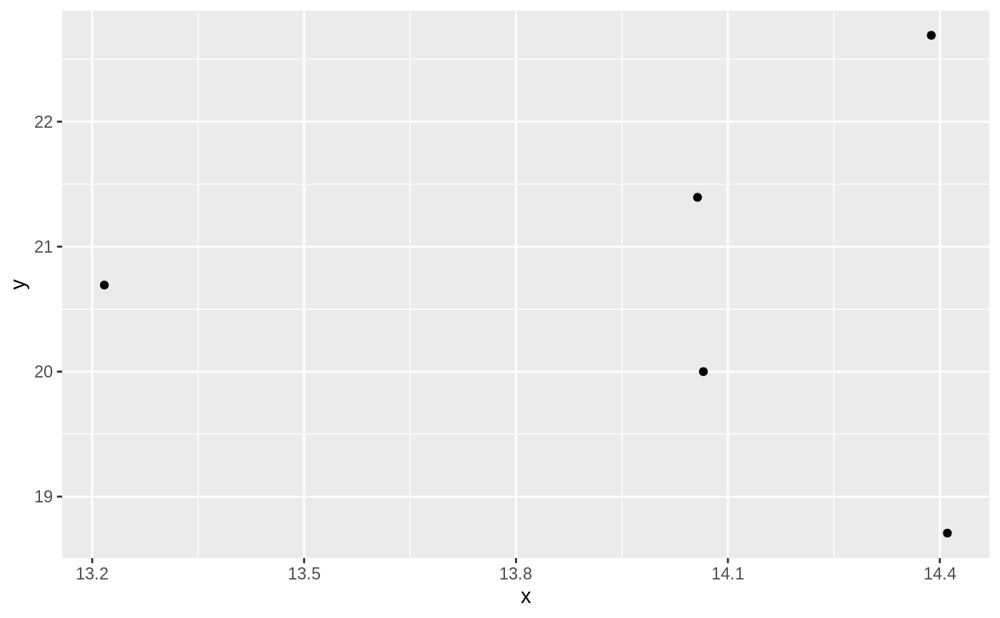
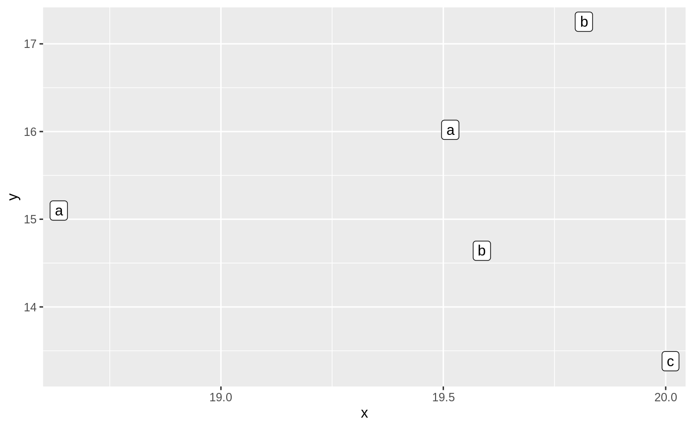

These geoms are equivalent in functionality to ggplot2::geom_text() and
ggplot2::geom_label() and allows for simple annotation of nodes.
geom_node_text(mapping = NULL, data = NULL, position = "identity", parse = FALSE, nudge_x = 0, nudge_y = 0, check_overlap = FALSE, show.legend = NA, repel = FALSE, ...) geom_node_label(mapping = NULL, data = NULL, position = "identity", parse = FALSE, nudge_x = 0, nudge_y = 0, label.padding = unit(0.25, "lines"), label.r = unit(0.15, "lines"), label.size = 0.25, show.legend = NA, repel = FALSE, ...)
| mapping | Set of aesthetic mappings created by |
|---|---|
| data | The data to be displayed in this layer. There are three options: If A A |
| position | Position adjustment, either as a string, or the result of a call to a position adjustment function. |
| parse | If |
| nudge_x, nudge_y | Horizontal and vertical adjustment to nudge labels by. Useful for offsetting text from points, particularly on discrete scales. |
| check_overlap | If |
| show.legend | logical. Should this layer be included in the legends?
|
| repel | If |
| ... | Other arguments passed on to |
| label.padding | Amount of padding around label. Defaults to 0.25 lines. |
| label.r | Radius of rounded corners. Defaults to 0.15 lines. |
| label.size | Size of label border, in mm. |
geom_node_text understands the following aesthetics. Bold aesthetics are
automatically set, but can be overridden. Italic aesthetics are required but
not set by default
x
y
label
alpha
angle
colour
family
fontface
hjust
lineheight
size
vjust
Other geom_node_*: geom_node_arc_bar,
geom_node_circle,
geom_node_point,
geom_node_tile
require(tidygraph) gr <- create_notable('bull') %>% mutate(class = sample(letters[1:3], n(), replace = TRUE)) ggraph(gr, 'igraph', algorithm = 'nicely') + geom_node_point(aes(label = class))#> Warning: Ignoring unknown aesthetics: label